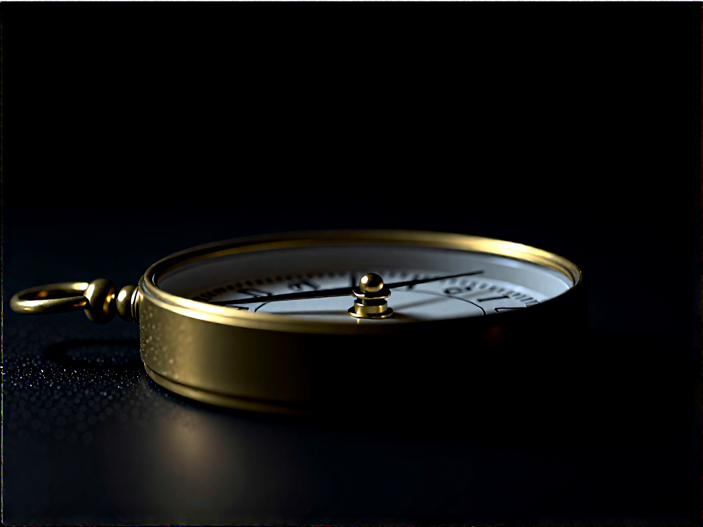

Bab 1
Mengapa Kita Sibuk Tapi Tidak Produktif?
Pengenalan kepada masalah asas — Clock vs Compass
“Saya sibuk” — ayat yang paling dibanggakan, tapi paling tidak bermakna.
Pernah tak awak rasa hari-hari berlalu laju sangat? Bangun pagi, gosok gigi, minum kopi, pegang telefon, tengok mesej, balas email, scroll Facebook, scroll TikTok, scroll Instagram — dan tiba-tiba dah pukul 12 tengah hari. “Apa yang saya buat pagi tadi?” Awak tak ingat. Yang awak tahu, awak sibuk. Tapi kalau difikir balik, apa yang betul-betul selesai? Mungkin satu dua benda kecil. Tapi yang besar? Yang penting? Yang sepatutnya selesai minggu lepas? Itu masih tergantung.
Fenomena ini bukan sesuatu yang asing. Ia berlaku di seluruh dunia, termasuk di Malaysia. Dalam bahasa Inggeris, ada satu istilah yang cukup tepat menggambarkan situasi ini: being busy versus being productive. Sibuk tak sama dengan produktif. Tapi ramai antara kita tersilap anggap dua perkara ini sebagai benda yang sama.
Clock vs Compass — Dua Alat, Dua Arah Berbeza
Stephen Covey, dalam bukunya First Things First, memperkenalkan satu metafora yang sangat powerful: Clock vs Compass. Dalam Bahasa Melayu, jam vs kompas.
Jam adalah tentang berapa cepat kita bergerak. Ia soal kecekapan. Efisiensi. Macam mana kita boleh selesaikan lebih banyak kerja dalam masa yang lebih singkat. Berapa banyak email yang kita balas dalam satu jam. Berapa banyak meeting yang kita hadiri dalam sehari. Berapa banyak task yang kita check off dari to-do list.
Kompas pula adalah tentang arah. Ke mana kita hendak pergi? Adakah semua kerja yang kita buat ni membawa kita ke arah yang betul? Atau kita lari laju-laju, tapi lari dalam bulatan?
Covey kata: ramai antara kita terlalu fokus pada jam. Kita nak semuanya laju. Kita nak selesaikan banyak perkara dalam satu masa. Kita bangga dengan multitasking. Kita rasa kalau kita sibuk, itu bermakna kita penting. Bermakna kita diperlukan. Bermakna kita sedang mencapai sesuatu.
Tapi hakikatnya? Kita mungkin sedang berlari ke arah yang salah.
Bayangkan awak memandu kereta dari Kuala Lumpur ke Pulau Pinang. Awak pandu laju — 180 km/j. Dalam masa tiga jam, awak dah sampai Alor Setar. Awak kata, “Wah, laju saya sampai.” Tapi masalahnya, awak nak pergi Penang, bukan Alor Setar. Awak sampai tempat lain. Laju, tapi salah arah. Itulah perbezaan antara clock dan compass.
Inilah masalah utama yang dihadapi oleh ramai orang moden, termasuk kita di Malaysia. Kita semua sangat efficient — kita pandai selesaikan kerja dengan cepat. Tapi kita belum tentu effective — kerja yang kita selesaikan tu belum tentu kerja yang betul.
Kecekapan vs Keberkesanan — Dua Bahasa Berbeza
Kecekapan (Efficiency) adalah tentang doing things right — buat kerja dengan cara yang betul. Gunakan masa minimum. Gunakan tenaga minimum. Jangan bazir sumber. Kalau dulu ambil masa dua jam siapkan satu laporan, sekarang dengan AI dan ChatGPT, setengah jam dah siap. Itu cekap.
Keberkesanan (Effectiveness) pula adalah tentang doing the right things — buat kerja yang betul. Laporan tu, betul ke patut awak buat? Atau sepatutnya orang lain yang buat? Atau sepatutnya tak payah buat langsung sebab laporan tu tak guna?
“There is nothing so useless as doing efficiently that which should not be done at all.” — Peter Drucker
Ini bukan soal teknologi. Ini soal pilihan. Kita boleh jadi sangat cekap dalam perkara yang tak berkesan. Contoh mudah: ada seorang eksekutif di sebuah syarikat di Kuala Lumpur. Setiap hari dia luangkan satu jam untuk proofread email pasukan dia sebelum email tu dihantar. Dia cekap — dia proofread dengan laju, dengan teliti. Tapi keberkesanannya? Mungkin lebih baik dia ajar pasukan dia cara menulis email yang betul, supaya dia tak perlu proofread setiap kali.
“Sibuk” Sebagai Status Simbol
Cuba awak perhatikan. Bila orang tanya, “Apa khabar?”, apa jawapan standard kita? “Khabar baik. Sibuk la.” Atau “Macam biasa, sibuk.” Atau kalau nak lagi impressif: “Sibuk gila, bang. Hampir tak cukup tangan.”
Kenapa kita rasa perlu cakap yang kita sibuk? Kenapa diam-diam kita bangga dengan kesibukan?
Ini yang menarik. Dalam masyarakat kita, kesibukan sudah menjadi status simbol. Kalau awak sibuk, bermakna awak penting. Bermakna awak ada kerja. Bermakna awak diperlukan. Bermakna awak tidak penganggur.
Kita dah lupa apa erti idle time. Masa lapang. Masa tak buat apa-apa. Dalam dunia moden, masa lapang dirasakan seperti musuh. Kita mesti optimize setiap minit.
Greg McKeown, dalam bukunya Essentialism, menyebut bahawa kita hidup dalam budaya di mana “kita menghargai having it all dan doing it all.” Kita nak semua. Kita nak kaya, nak ada karier hebat, nak ada keluarga bahagia, nak ada tubuh badan sihat, nak ada hobi, nak ada side hustle, nak travel, nak ada social life. Semua sekali gus.
Kebenaran Yang Sukar
Covey, dalam 7 Habits of Highly Effective People, mengingatkan kita tentang satu kebenaran yang sukar: Kita sentiasa ada pilihan. Mungkin kita rasa kita tak ada pilihan. Mungkin kita rasa kita terperangkap. Tapi hakikatnya, antara stimulus dan response, ada ruang. Dalam ruang itulah letaknya kebebasan kita untuk memilih.
Kita tak boleh kawal apa yang berlaku pada kita. Tapi kita boleh kawal apa yang kita buat tentangnya.
Tiga Soalan Paling Penting
Soalan 1: Dalam sejam yang lepas, apa yang betul-betul penting yang awak dah capai?
Soalan 2: Kalau awak tahu esok awak kena outstation dan tak boleh buat kerja langsung, apa satu benda yang awak mesti selesaikan hari ni?
Soalan 3: Kenapa? Kenapa awak sibuk? Kenapa awak rasa perlu sibuk?
Apa Yang Kita Akan Belajar Dalam Buku Ini
Buku ini bukanlah buku self-help tipikal yang bagi awak 10 tips macam mana nak jadi lebih produktif. Buku ni adalah tentang keutamaan — tentang memilih dengan sengaja perkara yang paling penting dalam hidup awak.
Buku ini bukan tentang buat lebih banyak. Buku ini tentang buat lebih sedikit — tetapi yang betul.
Refleksi Akhir Bab 1
- Apakah satu perkara yang awak lakukan setiap hari yang sebenarnya tak perlu dilakukan langsung?
- Adakah awak rasa sibuk atau produktif? — bezakan.
- Kalau awak ada satu jam esok yang tidak terganggu langsung, apa yang akan awak lakukan?
- Apa yang paling awak takutkan jika awak berhenti menjadi “sibuk”?
— Bersambung ke Bab 2 —